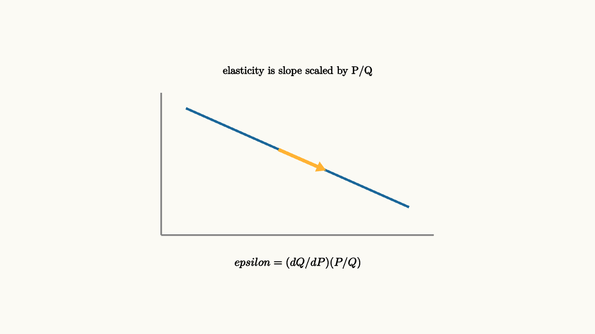

Elasticity Measures Responsiveness
Slope depends on units. If price is measured in dollars, cents, or euros, the numerical slope of a demand curve changes. Elasticity avoids that problem by comparing percentage changes.
This is why elasticity is more portable than slope. A grocery store manager, a transit planner, and a tax analyst may all ask how people respond to prices, yet their units and scales differ. A 50 cent increase means something different for gum, gasoline, and rent. A percentage change lets the comparison start on common ground.
Price elasticity of demand is
In calculus form,
This number answers a practical question: when price changes by one percent, about how many percent does quantity demanded change?
Economists often use the absolute value when speaking casually about demand elasticity. If a 1 percent price increase leads to a 2 percent fall in quantity demanded, demand is called elastic because the response is larger than the price change. The sign still matters in equations because demand curves usually slope downward.

source
background = [0.985, 0.98, 0.955, 1]
camera = Camera(4.8b)
mesh graph = block {
. stroke{GRAY, 2} Line(start: [-2.2, -1.1, 0], end: [2.2, -1.1, 0])
. stroke{GRAY, 2} Line(start: [-2.2, -1.1, 0], end: [-2.2, 1.2, 0])
. stroke{BLUE, 3} Line(start: [-1.8, 0.95, 0], end: [1.8, -0.65, 0])
. color{ORANGE} Arrow(start: [-0.3, 0.28, 0], end: [0.45, -0.05, 0])
. center{[0, 1.55, 0]} Text("elasticity is slope scaled by P/Q", 0.62)
. center{[0, -1.55, 0]} Tex("\\epsilon=(dQ/dP)(P/Q)", 0.66)
}
"scaled slope"
play Fade(0.6)Elastic demand means quantity responds strongly to price. Inelastic demand means quantity responds weakly. Necessities with few substitutes tend to be less elastic. Products with many substitutes tend to be more elastic.
Substitution is the story behind many examples. If one brand of cereal raises its price, shoppers can move to nearby brands. If insulin becomes more expensive, many patients have far fewer choices. Time also matters. Gasoline demand may be inelastic this week because people still need to drive to work. Over several years, people can move, carpool, buy efficient cars, or change jobs, so responsiveness can grow.
Revenue connects directly:
If demand is elastic, lowering price can raise revenue because quantity grows enough. If demand is inelastic, raising price can raise revenue because quantity falls only a little.
The revenue rule comes from differentiating $R(P)=P Q(P)$. A small price increase changes revenue through two channels: each unit sells for more, and fewer units are sold. Elasticity compares those channels. When quantity is very responsive, the lost units dominate. When quantity is weakly responsive, the higher price dominates.
source
param elastic = 0.8
background = [0.985, 0.98, 0.955, 1]
camera = Camera(4.8b)
let Demand = |elastic| block {
. stroke{GRAY, 2} Line(start: [-2.4, -1.0, 0], end: [2.4, -1.0, 0])
. stroke{GRAY, 2} Line(start: [-2.4, -1.0, 0], end: [-2.4, 1.1, 0])
. stroke{BLUE, 3} Line(start: [-1.8, 0.8, 0], end: [1.8, 0.8 - 1.25 * elastic, 0])
. center{[0, 1.45, 0]} Text("flatter demand means stronger quantity response", 0.62)
}
"less responsive"
mesh d = Demand(elastic: $elastic)
play Fade(0.5)
"more responsive"
elastic = 1.45
d = Demand(elastic: $elastic)
play Lerp(1.0)Elasticity is also useful outside prices. Income elasticity asks how demand changes as income changes. Cross-price elasticity asks how the demand for one good changes when another good's price changes. Those versions help identify luxuries, necessities, substitutes, and complements.
The lesson to keep: elasticity is a unit-free responsiveness measure. It turns slope into a decision tool for pricing, taxes, policy, and forecasting.